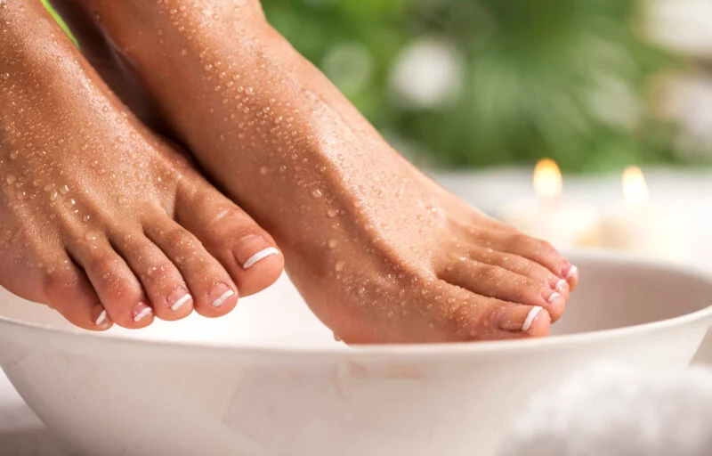
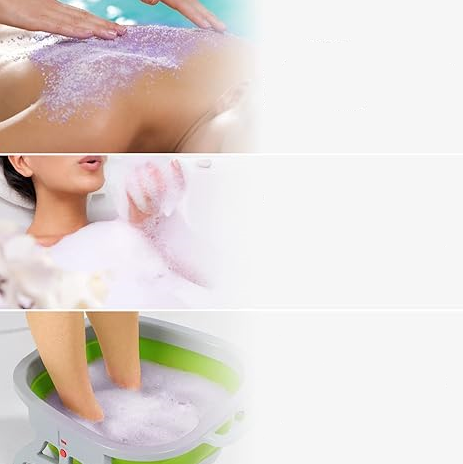
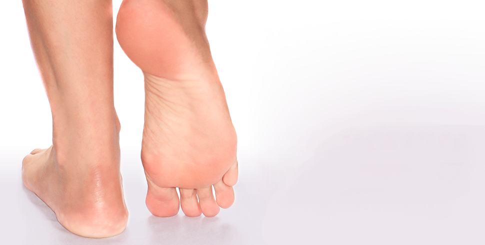
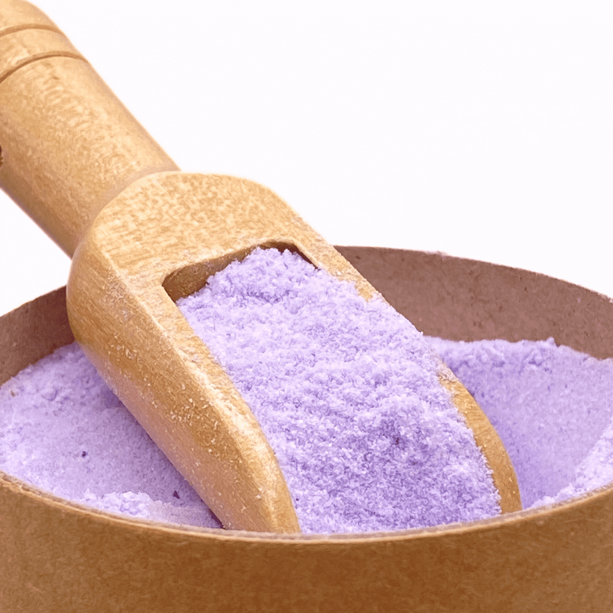
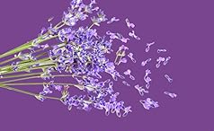
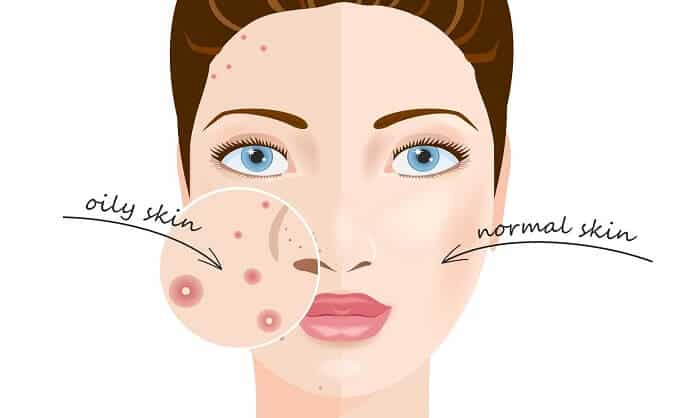

Lavender Bath Salt
Foot Soak
Relief of foot fatigue after exercise
Wear high heels for a long time to relieve fatigue
Relieve the fatigue after going to work

FOUR ADVANTAGE
- Relieve muscle fatigue and joint soreness
- Soft and long-lasting moisturizing skin
- Remove dead skin and exfoliation
- Lavender smells freash and pleasant


About Foot Soak Salts
🪻The unique design of 20 small bags: avoid the failure caused by damp after the opening of the
large bag is not used up, more clean and hygienic, independent small bags, one bag at a time, so
that you can take away to any business place anytime and anywhere. Fast and convenient, clean and
hygienic, exclusive design, new model on the market. Tea Tree Oil Foot Soak with Epsom Salt pedicure
foot spa products
🪻The salt is much finer than other soaker salts，Relieve PAIN muscles and joints: suitable for the foot fatigue, pain, foot odor, tired after a long walk, the foot tension after a day of work to relieve and relax. Enjoying a rejuvenating foot soak after a hard day to relax sore muscles a soak bath will, decompress and relax your tired muscles, and help you relax and get rid of stress in your system! epsom salt foot soak Softens Calluses, Soothes Sore & Tired Feet,
🪻Unique proprietary formula: A combination of lavender and foot bath salts, our natural blend relaxes sore and tired feet, helps soften rough calluses and leaves your feet and toenails feeling clean and healthy. athletes foot treatment extra strength athletes foot foot bath epsom salt pedicure foot soak foot spa epsom salts for soaking for pain toenail futreatment foot treatment extra strength pedicure foot care foot treatment tea tree oil for toenail foot soaking tub
🪻Relaxation of muscle tension: Daily remedial foot health and beauty products are well known: powerful action, skin detoxification and hydration, and relief of infections, Athlete's foot, long-lasting scents, and more! ingrown toenail
🪻Daily foot massage company: When you tired home, a relaxed foot film to relax foot massage, let you get rid of the day's unhappy and tired, new passion and vitality. toenail treatment
🪻The salt is much finer than other soaker salts，Relieve PAIN muscles and joints: suitable for the foot fatigue, pain, foot odor, tired after a long walk, the foot tension after a day of work to relieve and relax. Enjoying a rejuvenating foot soak after a hard day to relax sore muscles a soak bath will, decompress and relax your tired muscles, and help you relax and get rid of stress in your system! epsom salt foot soak Softens Calluses, Soothes Sore & Tired Feet,
🪻Unique proprietary formula: A combination of lavender and foot bath salts, our natural blend relaxes sore and tired feet, helps soften rough calluses and leaves your feet and toenails feeling clean and healthy. athletes foot treatment extra strength athletes foot foot bath epsom salt pedicure foot soak foot spa epsom salts for soaking for pain toenail futreatment foot treatment extra strength pedicure foot care foot treatment tea tree oil for toenail foot soaking tub
🪻Relaxation of muscle tension: Daily remedial foot health and beauty products are well known: powerful action, skin detoxification and hydration, and relief of infections, Athlete's foot, long-lasting scents, and more! ingrown toenail
🪻Daily foot massage company: When you tired home, a relaxed foot film to relax foot massage, let you get rid of the day's unhappy and tired, new passion and vitality. toenail treatment
Product Details

Item Form:
Powder
Item Form:
Powder

Scent:
Lavender
Scent:
Lavender
Brand:
Xiweioo
Product Benefits:
Detox,
Hydrating,
Relaxes, Softening

Skin Type:
All Types
Skin Type:
All Types
CUSTOMER REVIEWS
4.8

Based on 2914 reviews

Sarah J.
 Verified Buyer
Verified Buyer
The results are incredible!
I've been using this lavender-infused foot soak for weeks, and the results are
incredible! The powder form makes it convenient to use, and the soothing scent of
lavender helps me unwind after a long day. My feet feel rejuvenated, and the combination
of detox, hydration, and relaxation truly delivers on its promises. I highly recommend
it!

Emily S.
Verified Buyer
A wonderful product!!!
This foot soak has become a staple in my self-care routine. The variety of
benefits, from detoxifying to softening the skin, make it versatile. I appreciate the
thoughtfulness in including natural ingredients. The circular design of the packaging is
not only aesthetic but also eco-friendly. Overall, a wonderful product that delivers on
its promises.

Cheryl A.
Verified Buyer
It's a small luxury...
As someone who spends hours on their feet, this foot soak has become my go-to remedy.
The lavender fragrance is not overpowering but adds a delightful touch to the
experience. The powder dissolves easily, and the benefits are noticeable – my feet feel
softer, and the fatigue melts away. It's a small luxury that makes a big difference.